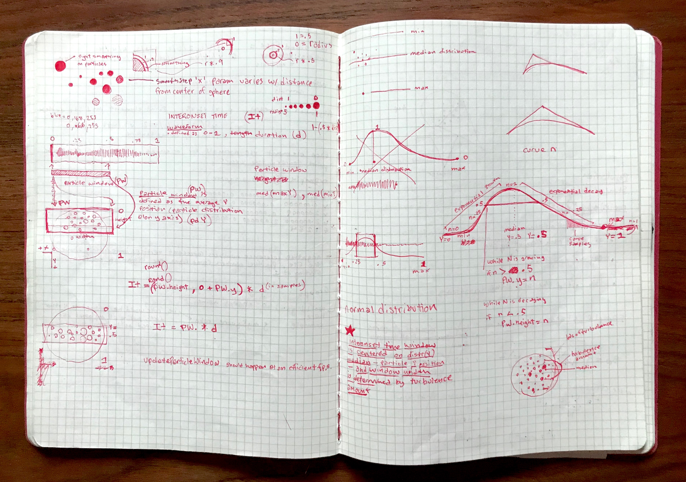

Microcosm is a 'sound toy' app I created in 2012. It takes the idea of a snow globe that you can tilt and shake and combines it with Granular Synthesis, which takes sounds and explodes them into what can be best described as sonic clouds.
The 3D grain cloud was created in OpenGL, and uses the iPhone's accelerometer and gyroscope to control a verlet physics routine. Spatial 3D audio creates an immersive effect when listening with headphones. The whole experience was designed to be zen-like and meditative.

I love this user review on iTunes:
"My ten yr old son loves it! He mostly likes shooter games, but he really loves this — I think because it sets up a very elemental and engaging relation between scale and space — (or maybe that's the reason I love it) — Keep going!"